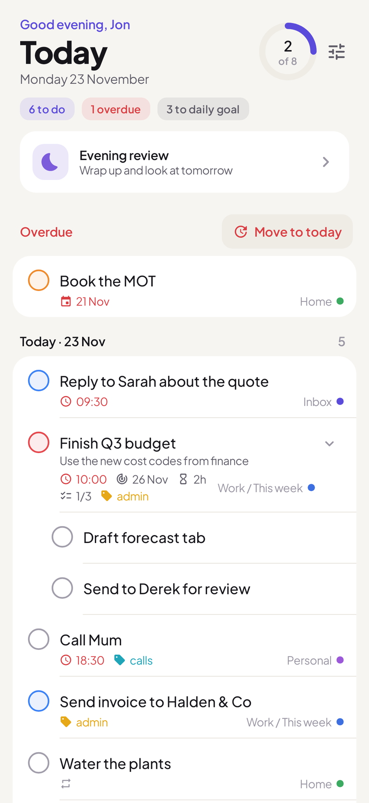
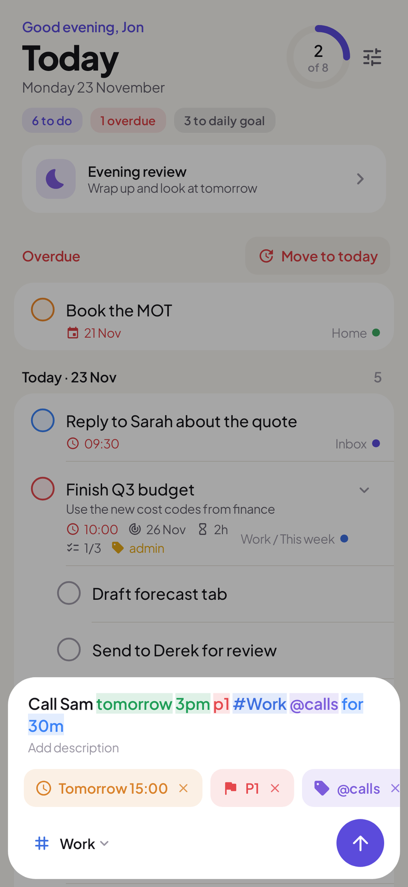
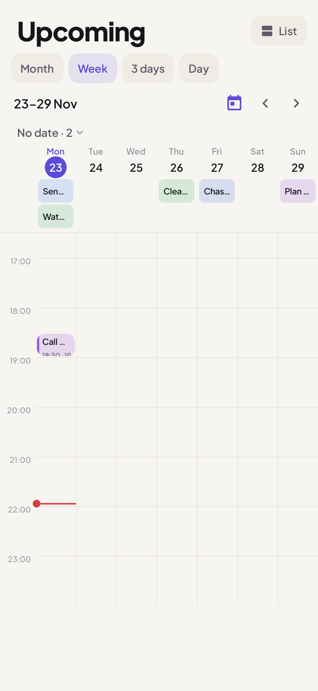
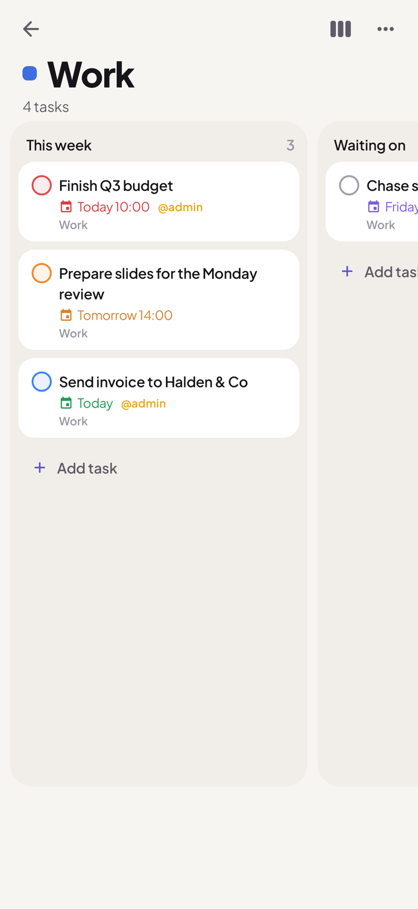
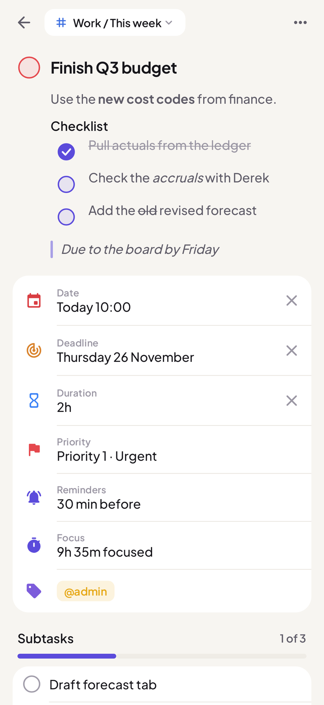
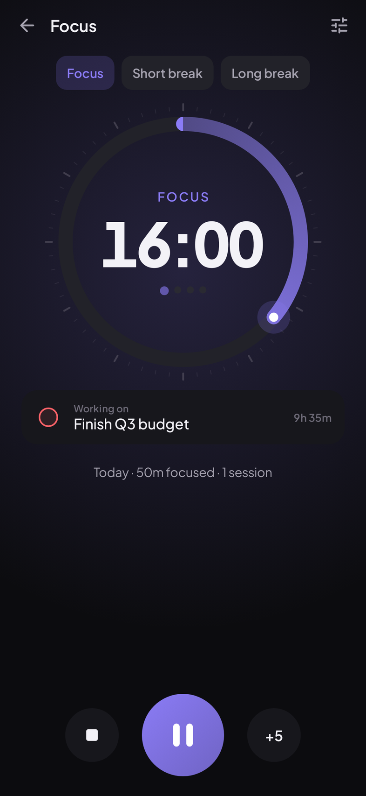
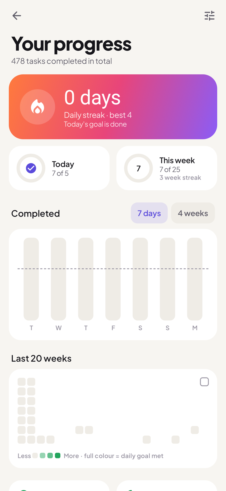
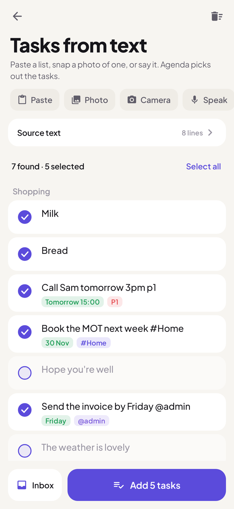
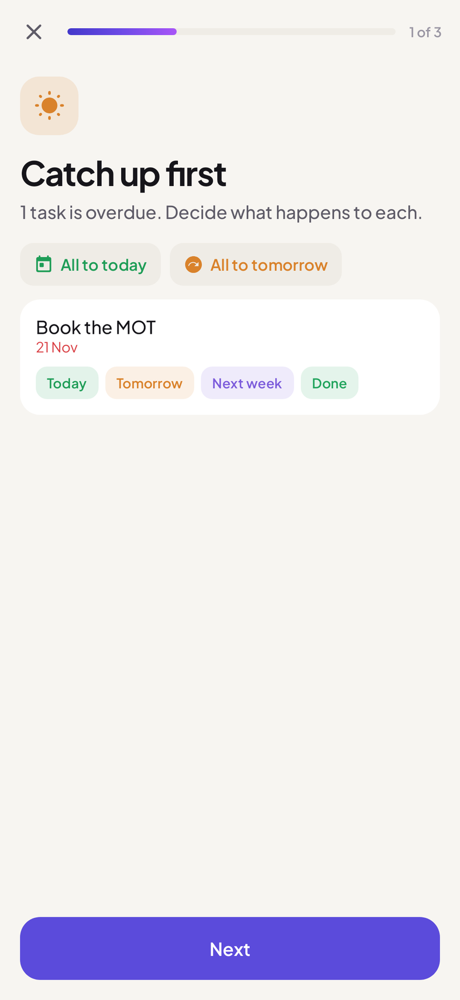
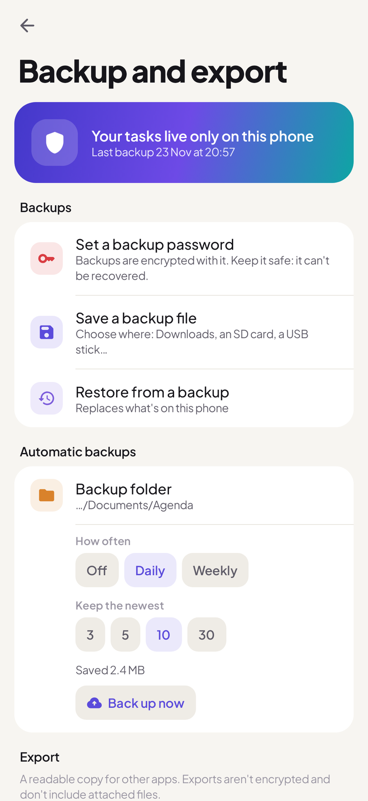

Everything you need to do. Nothing you don't.
Agenda is a to-do list that keeps up with you. Type or say a task and it understands the details, see your week as a calendar and block out your time, get reminders that really ring, and focus on one thing at a time.
It is free, with no adverts and nothing to unlock. There is no account, and the app cannot go online, so your plans stay on your phone.
Download for AndroidHow to install
- Version 1.0.0
- Android 8 or later
- 31.0 MB
Free, with nothing to unlock. No adverts, no account with the developer, no tracking. Compare or read the release notes.
Chrome may say the file might be harmful. It shows this for app files that do not come from Google Play. Choose Download anyway.

- No subscriptionEvery feature is in the free app.
- No advertsNone in the app and none on this site.
- No internetThe app has no permission to go online.
- EncryptedTasks, notes and files are locked on the phone.
A look inside
These are the real screens, drawn from the app's own code with made-up tasks. Swipe or scroll sideways to see them all.









How it works
Get things out of your head fast, decide what matters today, and then get on with it.
Capture anything
Tap + and type it the way you would say it, hold + and speak, or paste or photograph a whole list.
Plan the day
Each morning, catch up on anything overdue, pick what matters, and drag tasks onto the day's timeline.
Do it and tick it
Reminders ring when it is time, the focus timer keeps you on one thing, and every tick moves your streak along.
Everything is in, and all of it is free
Nothing below is held back for a paid tier, because there is no paid tier.
Capture
- Smart typing
- Type “Call Sam tomorrow 3pm #Work @calls p1” and Agenda picks out the date, time, project, label and priority as you type, plus repeats, deadlines, durations and reminders.
- Speak a task or a list
- Hold the + button and say it. Your phone's own on-device speech engine turns it into text, so nothing you say leaves the phone.
- Tasks from text or a photo
- Paste a list, share one from another app, or photograph a whiteboard or sticky note, and tick the tasks you want to add.
- Widgets, tiles and shortcuts
- A Today widget you can tick off, a Quick add bar, Quick Settings tiles for adding tasks and focusing, and launcher shortcuts.
Organise
- Projects, sections and subtasks
- As many projects as you like, with sections, subtasks, labels, colours, favourites and an archive.
- Five ways to see a project
- List, board, table, calendar or an urgent-and-important matrix, with drag and drop in every one.
- Saved filters
- Write views like “today | overdue” or “p1 & #Work”, keep as many as you want, and pin any of them to the bottom bar.
- Rich notes and files
- Checklists, bold, headings and links in notes, plus photos, voice memos and documents on tasks, all encrypted.
Plan
- Calendars and time-blocking
- Month, week, three-day and day views. Drag a task onto a time to block it out, or into the all-day row.
- Plan my day and evening review
- Two minutes each morning to catch up and choose what matters, and a short wrap-up each evening.
- Every kind of repeat
- Every weekday, every second Friday, the last day of the month, every three days after you finish, and many more.
Remember
- Reminders that ring
- At a time, before a task is due, or when you arrive at or leave a place. Alarm-style reminders ring over the lock screen.
- Nagging, if you want it
- A reminder can repeat every few minutes until the task is done. Done, Snooze and Tomorrow work from the notification.
- Morning and evening
- A morning summary that opens Plan my day, and an evening one that opens the review.
Get it done
- Focus timer
- Work in focused blocks with short and long breaks. The time counts towards the task, and the countdown sits in your notifications.
- Streaks and goals
- Daily and weekly goals, streaks that skip your days off and holidays, a 20-week heatmap and your best days and hours.
- Celebrations
- Satisfying ticks, a ring that fills through the day and confetti when you clear it, with a setting to tone them down.
Your data
- Encrypted backups
- Save a password-locked backup anywhere, or let Agenda back up daily or weekly into a folder you choose. Restore on any phone.
- Exports
- A PDF to print or send, a spreadsheet, a checklist in plain text, a calendar file, or everything as JSON.
- Share a project
- Hand a project to someone as a small file or a QR code they scan with Agenda. No accounts or servers involved.
Your plans are your business
No internet at all
Agenda has no permission to go online. It cannot send your tasks anywhere.
Encrypted on the phone
Tasks, notes and attached files are encrypted with a key kept by the phone's secure hardware, and left out of cloud backups.
Locked if you want
A PIN or fingerprint lock, hidden from the recent apps screen, and widgets that hide task names while the lock is on.
Installing and updating
Agenda is not on Google Play, so your phone asks a couple of extra questions the first time.
Download the app file
Tap Download on your phone. The file is called Agenda.apk and is about 31.0 MB. If Chrome says the file might be harmful, choose Download anyway.
Allow the install
Open the file. The first time, Android asks you to allow your browser to install apps. Allow it, go back and tap Install. If Google Play Protect steps in, choose More details, then Install anyway.
Updating later
Agenda never goes online, so it cannot check for updates itself. Settings, About, Updates opens the release page: install the new file over the old one and all your tasks are kept.
Version 1.0.0, released 23 November 2026. See the release notes, or check your download.
Questions
Is Agenda really free?
Yes. There is no paid version, no subscription, no trial and no adverts, and nothing in the app is locked.
Is it on Google Play?
No. Agenda is a personal project and is downloaded from this site as an Android app file. It needs Android 8 or later, which covers almost every phone in use.
Does it need the internet?
No. The app does not ask Android for internet access at all, so it cannot go online. Voice input uses your phone's on-device speech engine, and photos are read by a text reader built into the app.
Where are my tasks kept?
Only on your phone, in an encrypted database whose key is held by the phone's secure hardware. Attached files are encrypted too. Agenda is left out of Google's cloud backups; use its own encrypted backups instead.
Can I use it on two phones, or with other people?
There is no syncing, because nothing goes online. You can share a project by file or QR code, and move everything to a new phone with an encrypted backup.
Can I bring my tasks from another app?
Agenda has no importer from other apps. Copy your list, open Tasks from text in Browse and paste it: Agenda picks out the tasks and reads dates, projects and labels in each line.
Why might a reminder be late?
Some phones hold back alarms to save battery. On Android 12, allow exact reminders in Agenda's settings, and leave Agenda out of battery saving if your phone offers it.
What if I forget my backup password?
It cannot be recovered, by anyone. Set a new one in Backup and export and make a fresh backup; older backups still need the old password.
Who made it?
Agenda is made by Jonathan Jackson, an independent developer in the United Kingdom. It is not connected with Todoist, TickTick or any other app maker.
Everything you need to do
Free, with no adverts and nothing to unlock. Made by the developer of several other free Android apps: see them all.